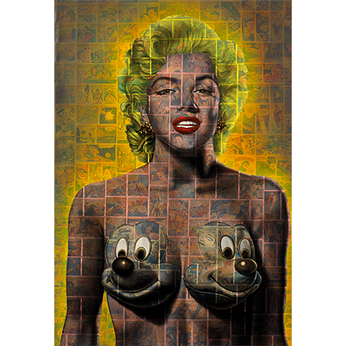

Exhibitions
Lazarus Rising, Elms Lesters Painting Rooms, London, United Kingdom, May 8–June 6, 2009.
Immortal Underground, Opera Gallery, New York, New York, US, November 12–December 2, 2009.
Nimbus Vapor, Opera Gallery, New York, New York, US, October 1, 2009.
Literature
Ron English, Lazarus Rising (London: Elms Lesters Painting Rooms, 2009), p. 29.
Notes
The work’s inclusion in Lazarus Rising is documented in the exhibition catalogue.
In Lazarus Rising, this work was erroneously reported as 36x52 cm.
This work references Marilyn Monroe.